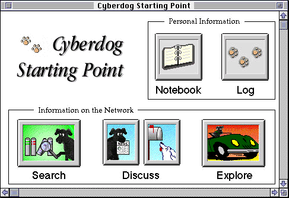
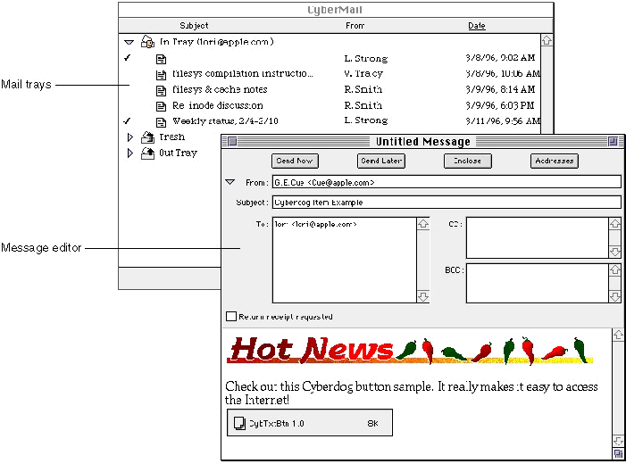
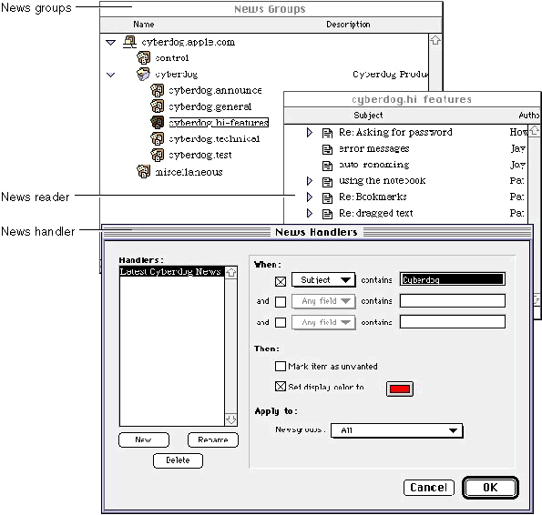
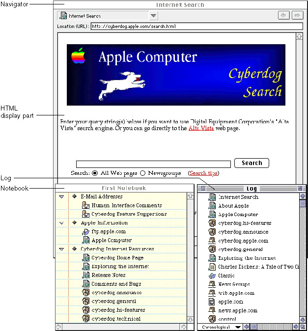

Legacy Document
Important: The information in this document is obsolete and should not be used for new development.
Important: The information in this document is obsolete and should not be used for new development.


What Is Cyberdog?
Cyberdog is an extensible architecture for searching and browsing networks, accessing Internet mail and newsgroups, and embedding network content in OpenDoc documents and container applications. Cyberdog uses OpenDoc to allow the user to combine network content with other content smoothly.Figure 1-1 shows the Cyberdog Starting Point window, the interface through which most users access Cyberdog. The Cyberdog Starting Point window, which is actually an OpenDoc document window, contains buttons for accessing the primary Cyberdog features.
Figure 1-1 The Cyberdog Starting Point

Cyberdog provides a variety of fully implemented tools for accessing networks, such as tools for sending and receiving Internet mail, including a message editor and mail trays for organizing incoming and outgoing mail, as shown in Figure 1-2. Cyberdog uses the POP/SMTP protocol to access mail servers.

Cyberdog provides components for connecting to newsgroups, reading news, and handlers for filtering news, as shown in Figure 1-3. Cyberdog uses the NNTP protocol to access news servers.

Cyberdog provides built-in access to network data using a variety of protocols, including Gopher, FTP, Telnet, and HTTP. The Cyberdog Connect To dialog box allows the user to enter information for connecting to a remote location using a particular protocol. The Cyberdog Preferences dialog box allows the user to specify usage preferences for a particular protocol.
Cyberdog supplies part editors that are enhanced to download and display information located on a network (Figure 1-4). Cyberdog provides display parts for a variety of formats including text, JPEG images, QuickTime movies, and so on. A Cyberdog display part may be embedded in other OpenDoc document, displayed in its own window, or displayed embedded in a Cyberdog navigator. The navigator is a tool that makes it easy for the user to browse the Internet, moving from one location to another without opening many windows.
Figure 1-4 Navigating to and displaying network content

The Cyberdog log provides users with a simple but useful way of looking at the locations that they have visited during a session. Each location is represented by a Cyberdog item, a reference to remotely located data. Notebooks provide a place for users to store Cyberdog items that refer to network locations that they might want to visit again. The log and notebook windows are always available, regardless of which Cyberdog features the user is currently working with.
Developing with Cyberdog
From an architectural perspective, Cyberdog is a collection of OpenDoc classes and concrete parts that provides a flexible, extensible framework for accessing remotely located information.Using the Cyberdog class library, you can do the following:
Cyberdog display parts that you develop are indistinguishable from those supplied by Cyberdog; the components in Cyberdog communicate using the same public IDL interfaces available to developers. Likewise, the services shipped with Cyberdog are not implemented in any special way; they load through the same interfaces that are available to developers. You add support for new services into the Cyberdog class library by creating new subclasses.
- modify an existing OpenDoc part or create a new OpenDoc part that can download and display content located on the Internet. For example, you might develop a QuickTime VR or VRML part.
- add network access to an existing application. For example, you might extend an application for creating multimedia presentations to allow the user to browse and download videos stored in an Internet database.
- add support for a new network service to Cyberdog. For example, you might extend Cyberdog to support a videoconferencing service.
- replace a Cyberdog-provided part, such as the Cyberdog text display part, the log, or the navigator with your own custom part.
Data Types and Network Protocols
The Cyberdog class library is organized to address two issues: data type and protocol. To address these issues, Cyberdog has independent sets of objects: objects that understand different data types and objects that understand different protocols. Keeping the two dimensions independent improves code independence and reuse, since a display part for any data type can be combined with objects that provide data from any protocol.If you wish to add support for a new network protocol, you can create Cyberdog subclasses to support the new protocol. When a Cyberdog display part needs to access data using a particular network protocol, Cyberdog dynamically chooses the appropriate objects to retrieve the data, insulating the display part from details about the protocol that was used to download it.
If you develop a display part for a particular type of network data (a QuickTime VR display part, for example), you can concentrate on how your part editor displays its content. Cyberdog relies on OpenDoc to dynamically select the right display part to display data as the need arises, leaving Cyberdog's protocol objects to locate and download the data. This insulates the protocol objects from details about which display part is displaying the data.